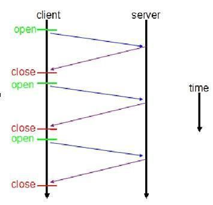
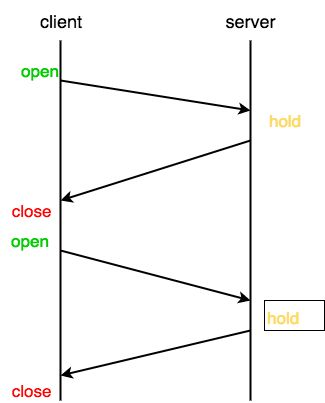
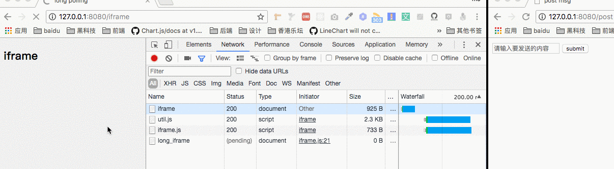

简介
Web Sockets定义了一种在通过一个单一的 socket 在网络上进行全双工通讯的通道。仅仅是传统的 HTTP 通讯的一个增量的提高，尤其对于实时、事件驱动的应用来说是一个飞跃。
通过Polling(轮询)、Long-Polling(长轮询)、Websocket、sse的对比。四种Web即时通信技术比较它们的实现方式和各自的优缺点。
对比优缺点如下：
| # | 轮询(Polling) | 长轮询(Long-Polling) | Websocket | sse |
|---|---|---|---|---|
| 通信协议 | http | http | tcp | http |
| 触发方式 | client(客户端) | client(客户端) | client、server(客户端、服务端) | client、server(客户端、服务端) |
| 优点 | 兼容性好容错性强，实现简单 | 比短轮询节约资源 | 全双工通讯协议，性能开销小、安全性高，可扩展性强 | 实现简便，开发成本低 |
| 缺点 | 安全性差，占较多的内存资源与请求数 | 安全性差，占较多的内存资源与请求数 | 传输数据需要进行二次解析，增加开发成本及难度 | 只适用高级浏览器 |
| 延迟 | 非实时，延迟取决于请求间隔 | 同短轮询 | 实时 | 非实时，默认3秒延迟，延迟可自定义 |
上面基本上包含了各个实现方式的优点和缺点，它们基于什么协议、由那端主动发送数据。
轮询(Polling)
短轮询(Polling)的实现思路就是浏览器端每隔几秒钟向服务器端发送http请求，服务端在收到请求后，不论是否有数据更新，都直接进行响应。在服务端响应完成，就会关闭这个Tcp连接，如下图所示：

示例代码实现如下：1
2
3
4
5
6
7
8function Polling() {
fetch(url).then(data => {
// somthing
}).catch(err => {
console.log(err);
});
}
setInterval(polling, 5000);
- 优点：可以看到实现非常简单，它的兼容性也比较好的只要支持http协议就可以用这种方式实现。
- 缺点：但是它的缺点也很明显就是非常的消耗资源，因为建立
Tcp连接是非常消耗资源的，服务端响应完成就会关闭这个Tcp连接，下一次请求再次建立Tcp连接。
COMET
Alex Russell（Dojo Toolkit 的项目 Lead）称这种基于HTTP长连接、无须在浏览器端安装插件的“服务器推”技术为“Comet”。
常用的COMET分为两种：基于HTTP的长轮询（long-polling）技术，以及基于iframe的长连接流（stream）模式。
长轮询（Long-Polling）
客户端发送请求后服务器端不会立即返回数据，服务器端会阻塞请求连接不会立即断开，直到服务器端有数据更新或者是连接超时才返回，客户端才再次发出请求新建连接、如此反复从而获取最新数据。大致效果如下：

客户端的代码如下：1
2
3
4
5
6
7
8
9function LongPolling() {
fetch(url).then(data => {
LongPolling();
}).catch(err => {
LongPolling();
console.log(err);
});
}
LongPolling();
- 优点： 长轮询和短轮询比起来，明显减少了很多不必要的http请求次数，相比之下节约了资源。
- 缺点：连接挂起也会导致资源的浪费。
基于iframe的长连接流（stream）模式
当我们在页面中嵌入一个iframe并设置其src时，服务端就可以通过长连接“源源不断”地向客户端输出内容。
例如，我们可以向客户端返回一段script标签包裹的javascript代码，该代码就会在iframe中执行。因此，如果我们预先在iframe的父页面中定义一个处理函数process()，而在每次有新数据需要推送时，在该连接响应中写入。那么iframe中的这段代码就会调用父页面中预先定义的process()函数。（是不是有点像JSONP传输数据的方式？）1
2
3
4
5
6
7
8
9
10
11// 在父页面中定义的数据处理方法
function process(data) {
// do something
}
// 创建不可见的iframe
var iframe = document.createElement('iframe');
iframe.style = 'display: none';
// src指向后端接口
iframe.src = '/long_iframe';
document.body.appendChild(iframe);
后端还是以node为例1
2
3
4
5
6
7
8
9
10
11
12
13
14
15
16
17
18
19
20
21const app = http.createServer((req, res) => {
// 返回数据的方法，将数据拼装成script脚本返回给iframe
const iframeSend = data => {
let script = `<script type="text/javascript">
parent.process(${JSON.stringify(data)})
</script>`;
res.write(script);
};
res.setHeader('connection', 'keep-alive');
// 注意设置相应头的content-type
res.setHeader('content-type', 'text/html; charset=utf-8');
// 当有数据更新时，服务端“推送”数据给客户端
EVENT.addListener(MSG_POST, iframeSend);
req.socket.on('close', () => {
console.log('iframe socket close');
// 注意在连接关闭时移除监听，避免内存泄露
EVENT.removeListener(MSG_POST, iframeSend);
});
});
效果如下：

不过使用iframe有个小瑕疵，因此这个iframe相当于永远也不会加载完成，所以浏览器上会一直有一个loading标志。
他的优缺点和上面的长轮询一样。
Websocket
WebSocket的一些特性和基础使用方法在这里就不多赘述了，请看另一篇博客webSocket(一) 浅析;
大致代码如下：
服务端1
2
3
4
5
6
7
8
9
10
11
12
13
14
15
16
17
18const express = require('express');
const app = express();
const server = require('http').Server(app);
const WebSocket = require('ws');
const wss = new WebSocket.Server({port: 8080});
wss.on('connection', function connection(ws) {
console.log('server: receive connection');
ws.on('message', function incoming(message) {
console.log('server: recevied: %s', message);
});
ws.send('world');
});
app.get('/', function (req, res) {
res.sendfile(__dirname + '/index.html');
});
app.listen(3000);
客户端1
2
3
4
5
6
7
8
9const ws = new WebSocket('ws://localhost:8080');
ws.onopen = function () {
console.log('ws onopen');
ws.send('from client:hello');
};
ws.onmessage = function (e) {
console.log('ws onmessage');
console.log('from server:' + e.data);
}
运行效果如下：
- 优点：不会造成性能的浪费
- 缺点：学习一套新的请求库
SSE (Server-Sent Events)
Server-Sent是HTML5提出一个标准。由客户端发起与服务器之间创建TCP连接，然后并维持这个连接，直到客户端或服务器中的任何一方断开，ServerSent使用的是”问”+”答”的机制，连接创建后浏览器会周期性地发送消息至服务器询问，是否有自己的消息。其实现原理类似于我们在上一节中提到的基于iframe的长连接模式。
HTTP响应内容有一种特殊的content-type —— text/event-stream，该响应头标识了响应内容为事件流，客户端不会关闭连接，而是等待服务端不断得发送响应结果。
SSE规范比较简单，主要分为两个部分：浏览器中的EventSource对象，以及服务器端与浏览器端之间的通讯协议。
基础用法
在浏览器中可以通过EventSource构造函数来创建该对象1
var source = new EventSource('/sse');
而SSE的响应内容可以看成是一个事件流，由不同的事件所组成。这些事件会触发前端EventSource对象上的方法。1
2
3
4
5
6
7
8
9
10
11
12
13
14
15
16
17
18
19// 默认的事件
source.addEventListener('message', function (e) {
console.log(e.data);
}, false);
// 用户自定义的事件名
source.addEventListener('my_msg', function (e) {
process(e.data);
}, false);
// 监听连接打开
source.addEventListener('open', function (e) {
console.log('open sse');
}, false);
// 监听错误
source.addEventListener('error', function (e) {
console.log('error');
});
客户端
1 | // 显示聊天信息 |
服务端 nodejs
1 | var express = require('express'); |
- 优点： 客户端只需连接一次，Server就定时推送，除非其中一端断开连接。并且SSE会在连接意外断开时自动重连。
- 缺点： 要学习新的语法
## 总结
上面四种Web即时通信技术比较，可以从不同的角度考虑，它们的优先级是不同的，基本上可以分为两大类基于
http和tcp两种通信中的一种。兼容性考虑
短轮询>长轮询>长连接SSE>WebSocket
从性能方面考虑
WebSocket>长连接SSE>长轮询>短轮询
服务端推送
WebSocket>长连接SSE>长轮询
参考
各类“服务器推”技术原理与实例（Polling/COMET/SSE/WebSocket）
JavaScript 服务器推送技术之 WebSocket
轮询、长轮询、长连接、websocket
消息推送机制-轮询、长轮询、SSE(Server Sent Event)和WS(WebSocket)